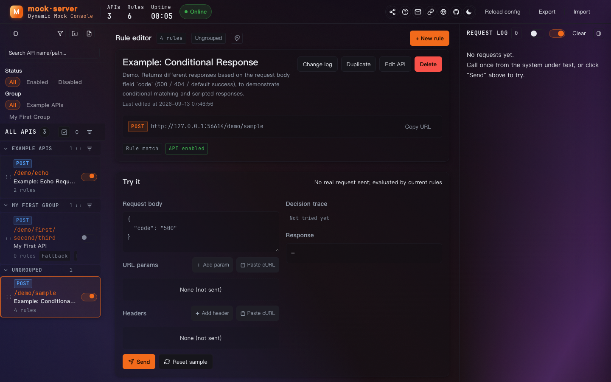
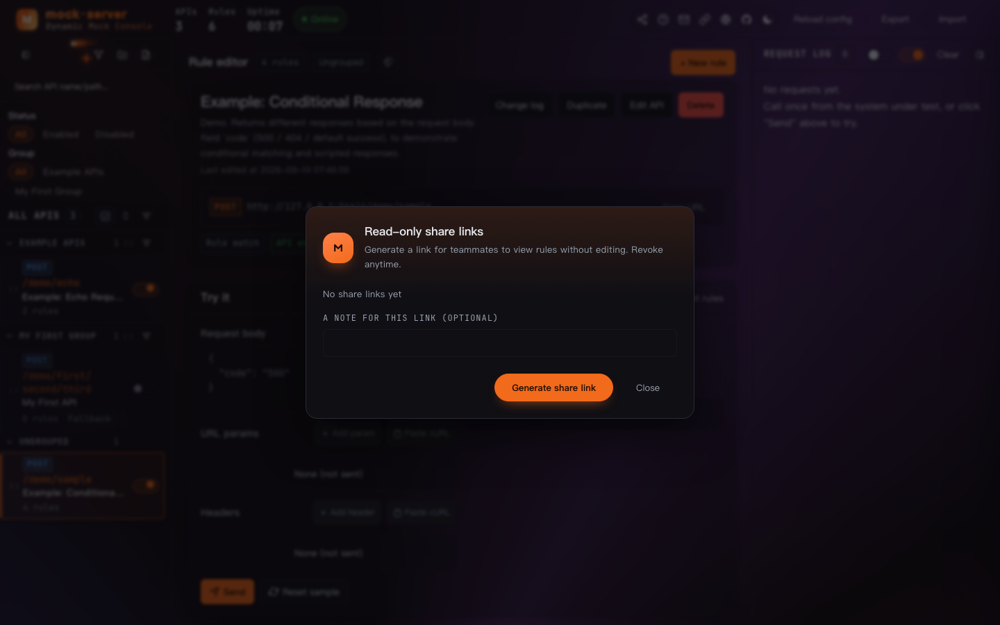

Mock Server 操作手册Mock Server Guide
给测试 / 联调同事的快速上手指南 —— 5 分钟学会用挡板接口代替真实上游做联调。A 5-minute quick-start for testers / integration colleagues: learn to use mock endpoints instead of the real upstream for joint debugging.
01快速上手Quick start
这是一个可配置的假接口（挡板 / mock）服务：被测系统不连真实上游，改连这里，就能按你配的规则返回成功、失败、超时等各种场景。This is a configurable fake-endpoint (mock) service: instead of hitting the real upstream, point the system-under-test here and it returns success / failure / timeout scenarios per your rules.
- 浏览器打开管理界面：
http://<挡板机IP>:18080/（有账号就先登录）；Open the console in a browser:http://<mock-server IP>:18080/(log in first if accounts are enabled); - 左栏找到目标接口（或新建成一个，见第三节）；In the left panel find the target API (or create one — see section 3);
- 把被测系统的上游地址改成挡板地址：
http://<挡板机IP>:18080（结尾不要带/）；Change the system-under-test's upstream URL to the mock address:http://<mock-server IP>:18080(no trailing/); - 被测系统正常发起调用 → 右栏日志立刻能看到每次请求和返回；The system-under-test calls normally → the right panel logs every request and response instantly;
- 要改返回内容？中栏改规则、保存，立即生效，不用重启。Need to change the response? Edit the rule in the middle panel and save — it takes effect immediately, no restart needed.
/模块/接口路径。比如接口配的是模块 demo、路径 sample，完整调用地址就是 http://127.0.0.1:18080/demo/sample。点接口卡片上的调用地址条可直接复制。mock address = base URL + /module/api-path. E.g. module demo, path sample → full URL http://127.0.0.1:18080/demo/sample. Click the address bar on the API card to copy it.02界面导览Console tour


| 区域Area | 是什么What it is | 常用操作Common actions |
|---|---|---|
| 左栏Left | 接口列表，按分组归拢API list grouped by category | 新建分组 / 接口；开关接口；搜索过滤；编辑 / 删除New group / API; toggle API; search & filter; edit / delete |
| 中栏Middle | 当前接口的规则编排 + 试打Rule editor + try-once for the current API | 加规则、调顺序（↑↓）、编辑接口、看变更记录Add rules, reorder (↑↓), edit API, view change history |
| 右栏Right | 实时请求日志Live request log | 自动刷新；只看当前接口；点条目看请求 / 返回详情Auto-refresh; current-API-only; click an entry for request / response details |
| 顶栏Top bar | 全局动作与入口Global actions & entries | 分享、帮助（本页）、联系维护者、根地址、语言、GitHub、主题、重读配置、导出 / 导入Share, help (this page), contact maintainer, base URL, language, GitHub, theme, reload config, export / import |
顶栏左侧的 接口 / 规则 / 运行时长 是服务健康概览；绿色「运行中」表示与服务的连接正常。The APIs / rules / uptime on the left of the top bar is a service-health overview; a green "Running" means the console is connected to the server.
03配置挡板规则Configure mock rules
3.1 新建接口3.1 Create an API
左栏「+ 分组」建个分组（只影响列表归类，不影响路径）→「+ 接口」填名称、模块、路径，下方会实时预览调用地址。In the left panel click "+ group" to create a group (affects listing only, not the path) → "+ API" to enter name, module, path; the call URL previews live below.
3.2 一条规则 = 条件 + 响应3.2 A rule = condition + response
中栏「+ 新增规则」。规则自上而下匹配，命中即停，所以宽泛的条件放下面、具体的放上面（可拖拽调整）。In the middle panel click "+ new rule". Rules match top-down and stop at first hit, so put broad conditions lower and specific ones higher (drag to reorder).
| 要模拟什么Scenario | 怎么配How to set it up |
|---|---|
| 按请求字段返回不同结果Different result by request field | 条件：请求体 code = 500 → 响应状态码 500Condition: request body code = 500 → response status 500 |
| 模拟超时 / 慢接口Simulate timeout / slow API | 响应里加延迟（如 3000ms）Add a delay to the response (e.g. 3000ms) |
| 模拟业务失败Simulate a business failure | 响应里自定义状态码 + 报文（如 {"success":false}）Custom status code + body (e.g. {"success":false}) |
| 原样回显（验联通）Echo back (connectivity check) | 用「回显」模板建接口，收到什么原样返回Create an API with the "echo" template; it returns whatever it receives |
| 部分真实 + 部分挡板Partly real + partly mock | 接口设置里配「代理回源」真实服务地址Set "proxy to upstream" with the real service URL in API settings |
| 数组逐项不同返回Different response per array item | 脚本响应模式（进阶，见 README 第七章）Scripted-response mode (advanced — see README chapter 7) |
04试打一枪Try a shot
中栏「试打一枪」：填请求体 / 参数 / 请求头 → 点「发送」，不经过网络，直接按当前规则判定：Middle panel "try a shot": fill request body / params / headers → click "send"; no network involved — it evaluates against the current rules directly:
- 右侧列出每条规则命中还是跳过、原因是什么，命中的高亮；The right side lists each rule as hit or skipped and why; the matched one is highlighted;
- 直接给出将返回的内容，配错当场就能发现；It shows exactly what would be returned, so misconfig is caught on the spot;
- 试打会记一条带「试打」标签的日志，方便和真实流量对照。A try-once entry tagged "try-once" is logged, handy to compare with real traffic.
推荐顺序：Recommended order: 配完规则 → 先试打自证 → 再让被测系统连上来。configure rules → try a shot to self-verify → then connect the system-under-test.
05查看请求日志Request logs
右栏每 3 秒自动刷新。每条日志：时间、调用路径、状态码、耗时、命中的规则徽标（如 R1）。The right panel auto-refreshes every 3 seconds. Each log: time, call path, status code, latency, matched-rule badge (e.g. R1).
| 我想…I want to… | 操作Action |
|---|---|
| 只看某个接口的请求See only one API's requests | 打开右栏「只看当前接口」开关Toggle "current API only" in the right panel |
| 看请求体 / 返回体详情See request / response body details | 点开那条日志Expand that log entry |
| 从日志跳到对应规则Jump from a log to its rule | 点日志里的规则徽标（R1…），中栏会滚动并高亮Click the rule badge (R1…) in the log; the middle panel scrolls and highlights |
| 暂停自动刷新 / 清空Pause auto-refresh / clear | 右栏第二个开关 / Clear 按钮Second toggle in the right panel / the Clear button |
06分享链接给同事Share link with colleagues
想让别人只看不改地查看规则？顶栏分享图标 → 「生成分享链接」：Want someone to view but not edit the rules? Top-bar share icon → "generate share link":


- 对方打开链接只能查看规则，改不了配置（服务端同样拦截写请求）；The recipient can only view the rules, not edit config (the server also blocks writes);
- 链接可随时撤销，撤销后对方打开会提示"链接已失效"；Links can be revoked anytime; after revoke, opening it shows "link expired";
- 每条链接可以写备注（比如给谁用的），方便管理。Each link can carry a note (e.g. who it's for) for easy management.
READONLY_PORT 后，分享链接走独立只读端口——对方把链接里的 ?share= 去掉也依然只读，安全性最高。With READONLY_PORT set at deploy time, share links use a separate read-only port — even if the recipient strips ?share= from the URL, it stays read-only, for maximum safety.07登录与账号Login & accounts
- 部署时开启登录保护的话，打开界面先登录；调用挡板接口本身不受登录影响，被测系统照常连；If login protection is enabled at deploy time, log in first when opening the console; calling the mock APIs themselves is unaffected by login — the system-under-test connects as usual;
- 密码忘了找部署同事重置；账号由管理员在头像菜单「Users」里增删；Forgot your password? Ask the deploy colleague to reset it; admins add/remove accounts in the avatar menu "Users";
- 界面语言（中文 / English）在顶栏 🌐 或登录页切换，记住你的选择。UI language (中文 / English) switches from the top-bar 🌐 or the login page, and your choice is remembered.
08常见问题FAQ
| 现象Symptom | 原因与处理Cause & fix |
|---|---|
| 被测系统连不上挡板System-under-test can't reach the mock | 检查上游地址写法：http://IP:18080，结尾不带 /；确认挡板服务在跑（顶栏「运行中」）Check the upstream URL format: http://IP:18080, no trailing /; confirm the mock server is running (top-bar "Running") |
| 返回 404404 returned | 路径写错（模块 / 接口对不上），或该接口没有配「兜底响应」且条件都未命中Wrong path (module / API mismatch), or the API has no "fallback response" and no rule matched |
| 改了规则没生效Rule change not applied | 规则没点保存；或浏览器缓存，Cmd+Shift+R 强刷页面Rule not saved; or browser cache — hard-refresh with Cmd+Shift+R |
| 分享链接打不开Share link won't open | 链接被撤销了，找分享的人重新生成The link was revoked; ask the sharer to regenerate |
| 想要某个"奇怪"的场景配不出来Can't model a "weird" scenario | 先试打验证条件写法；还不行找维护者（顶栏 ✉）Try a shot first to verify the condition syntax; if still stuck, contact the maintainer (top-bar ✉) |
更多部署与运维细节（systemd / Docker / 导入导出 / 管理接口），见项目根目录 README.md 与 docs/操作手册.md。For more deploy & ops details (systemd / Docker / import-export / admin API), see README.md and docs/操作手册.en.md at the repo root.